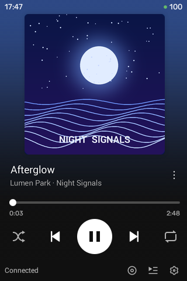
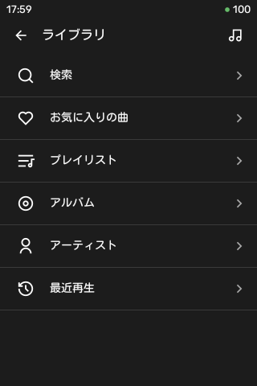
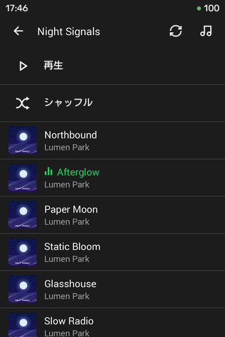

Overhear とは
古い Android 端末を Spotify の音楽プレーヤーにするアプリです。



-
端末だけで選曲・再生
検索・お気に入りの曲・プレイリスト・アルバム・アーティスト・最近再生をたどり、順番どおり・シャッフル・選んだ曲から再生できます。
-
スマホの Spotify から操作
Spotify Connect の再生先としてこの端末を選べば、スマホや PC の Spotify からリモコンのように選曲・操作できます。
-
お気に入り
いまの曲やライブラリの曲を、アカウントのお気に入りに追加・削除できます。
-
音量の連動
端末の音量キーでも、スマホの Spotify でも変えられ、どちらにも反映されます。
Spotify 公式のクライアントで再生
音を鳴らすのは、Spotify が開発者向けに配布している公式のヘッドレスクライアント Soloist です。Soloist は Spotify の規約に従って、自分のアカウントで発行した API キーで、端末上で Spotify から直接ダウンロードします。Overhear はそれを端末の上で動かすだけで、非公式クライアントは使わず、DRM の回避もしません。
スマホの Spotify から操作するだけなら Soloist の API キーだけで使えます。端末でライブラリを使うには、加えて自分の Spotify Developer アプリの Client ID が要ります（手順）。
必要なもの
-
Android 4.1〜7.1 の
ARMv7 端末。インターネットにつながること。
Android 8.0 以降では動作しません。Android 7.0 以降なら Spotify の公式アプリが使えるので、Overhear を使う必要はありません。 - Spotify Premium のアカウント（Soloist の API キーの発行に必要）。
- 端末と同じ Wi-Fi につながるスマホ（初回の設定とログインに使います）。
- APK を端末へ移すための PC またはスマホ。
動作確認は Xperia mini（ST15i、Android 4.3）だけです。 ほかの端末でも動く見込みはありますが、確かめていません。
インストール
古い Android のブラウザは、いまの GitHub の TLS に対応していないため、端末から直接ダウンロードできません。PC かスマホで APK をダウンロードしてから、端末へ移してください。
- overhear.apk を PC かスマホでダウンロードします。
-
次のどちらかで端末に入れます。
- ファイルを移して開く: 端末の設定の「セキュリティ」で「提供元不明のアプリ」を許可し、APK を端末に移して（USB・SD カード・Bluetooth など）ファイルマネージャーで開きます。
- adb（慣れている人向け）: Android SDK の adb を使える環境があれば、端末の USB デバッグを有効にして、APK を置いたフォルダで次を実行します。よくわからなければ上の方法で十分です。
adb install -r overhear.apk
更新は上書きインストールで。 同じ署名の APK
を上から入れれば（-r）、API
キーとログイン状態は残ります。アンインストールすると、保存した API
キーと Spotify のログインも消えます。署名の違う APK
は上書きできません。
初回セットアップ
API キーや Client ID は端末では入力しません。端末に QR コードを出し、同じ Wi-Fi のスマホで入力します。
-
Soloist の API キーを発行する
developer.spotify.com/dashboard/soloist で、自分の Spotify Premium アカウントの Soloist API キーを発行します。
-
Spotify のアプリを作る 端末で選曲するなら
ライブラリは Spotify Web API を使うので、自分の Spotify Developer のアプリが必要です（Overhear には Client ID が組み込まれていません）。スマホの Spotify から操作するだけなら、この手順は飛ばしてかまいません。
- developer.spotify.com/dashboard でアプリを作り、Web API を有効にします。
-
Redirect URI
に次を登録します（末尾のスラッシュまで含めます）。
https://potkc.github.io/overhear-auth/callback/ - アプリの Settings に出る Client ID（32 文字の16進数）を控えます。
開発モードの制約: アプリの所有者が Spotify Premium であること、使えるのは User Management の許可リストに登録した最大 5 人までです。自分以外の人が同じアプリでログインするときは、その人の Spotify のメールアドレスを User Management に登録してください。
-
端末で「スマホで認証」する
- 端末で Overhear を開きます。API キーがまだないので設定画面が開きます。
- 「アカウント」の 「スマホで認証」 を押すと、QR コードが表示されます。
- 端末と同じ Wi-Fi につないだスマホで QR コードを読み取ります。
- 開いたページに Soloist API キーと Client ID を貼り付け、「保存してログイン」 を押します。続けて Spotify のログインと許可の画面が開くので、許可します。
- 端末の画面が「完了」に変わります。
ライブラリを使わない（スマホの Spotify から操作するだけの）なら、Client ID は空欄のまま「Spotify にログインする」の印を外して 「保存」 を押します。QR コードの画面は最大 5 分で閉じ、QR コードは一回限りです。
-
「保存して開始」
設定画面に戻り、「再生」でデバイス名（既定は端末の機種名）を決め、必要なら「起動時・アプリを開いたときに自動で開始」を選んで 「保存して開始」 を押します。初回はランタイムの展開と Soloist のダウンロード（約 12 MB、Spotify から直接）が行われ、終わると再生画面に移ります。
-
再生する
再生画面の右下の円盤のアイコン（または戻るキー）でライブラリを開き、アルバムやプレイリストを選んで再生します。端末から音が出れば完了です。
スマホの Spotify から操作するときは、再生先（デバイス）の一覧でそのデバイス名を選びます。
使い方のメモ
- しばらく使わないと止まります
-
この端末で再生していない状態（一時停止中・
Standby・接続待ちなど）が続くと、電池を守るためにサービスを止めます。時間は設定画面の「再生」の「再生していないときの自動停止」で選べます（既定 15 分。5 分・30 分・しない）。 - 止まったあとに再開するには
- アプリ（再生画面かライブラリ）を開くと、自動停止のあとは再び開始します。止まっている間はアートワークの位置に大きな電源ボタンが出るので、それをタップしても開始できます。通知の ✕ や設定の「停止」で止めたときは、開いても自動では開始しません。
Standbyと出ているとき- この端末がいまの再生先ではない状態です（ほかの端末に再生を移したあとなど）。最後の曲が表示されていれば、▶ を押すとその曲をこの端末で再生し直します。
- 6 か月ごとにログインし直す
- 開発モードの Spotify アプリでは、ログインが最初の認可から 6 か月で切れます。ライブラリに「Spotify のログインが切れました — タップしてスマホで認証」と出たら、「スマホで認証」を開き、入力欄は両方空欄のまま「保存してログイン」を押してください。
- 音量
- 端末の音量キーでメディア音量を変えます。スマホの Spotify で音量を変えても、端末のメディア音量が連動します。
キーとログインの扱い
- Soloist API キー・Client ID・Spotify のログイン情報は端末の中にだけ保存されます。Overhear には開発者のサーバーがなく、キーやトークンは Spotify 以外へは送られません。
- 「スマホで認証」の間、端末は Wi-Fi のアドレスで最大 5 分だけ待ち受けます。QR コードの一回限りの値がないアクセスは拒否します。
-
Redirect URI
の中継ページ（
potkc.github.io/overhear-auth）は、Spotify のログインの結果を LAN 内の端末へ転送するだけの静的なページです。転送先はプライベート IPv4 のアドレスに限ります。ソースは poTKC/overhear-auth で公開しています。 - Soloist は APK に含まれていません。端末上で Spotify の CDN から直接ダウンロードします。
既知の不具合
- 開始直後に前回の曲の再生に戻れないことがある
- サービスを開始した直後に ▶ を押しても、前回の曲が再生されないことがあります。そのときは、設定画面の「再生サービス」で「停止」→「開始」と Soloist を起動し直すか、スマホの Spotify で再生先にこの端末を選んで再生を始めてみてください。
- ほかの人のプレイリストの曲一覧（実験的）
- ほかの人のプレイリストは Web API で曲一覧が取れないため、「再生」「シャッフル」だけを出し、再生中は Soloist のキューから曲一覧を組み立てています。実験的な機能なので、一覧が出ない・順番が合わないことがあります。